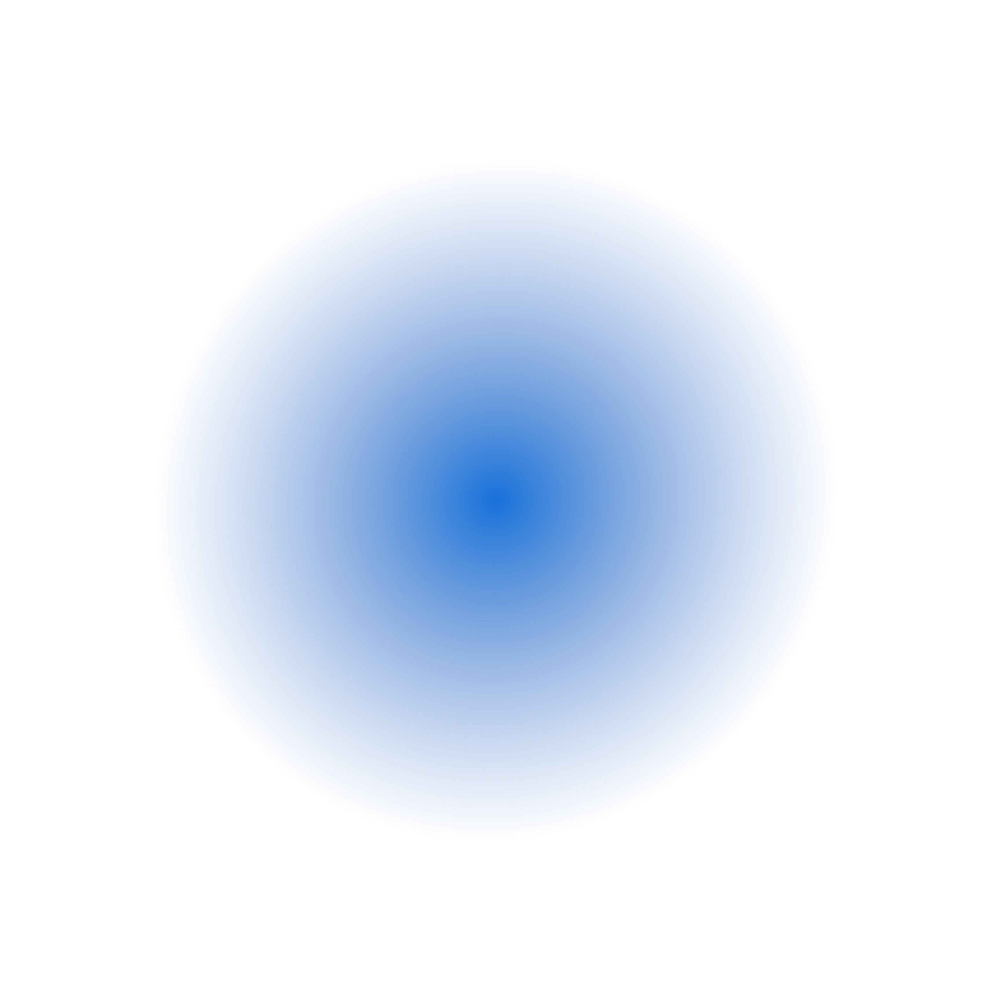
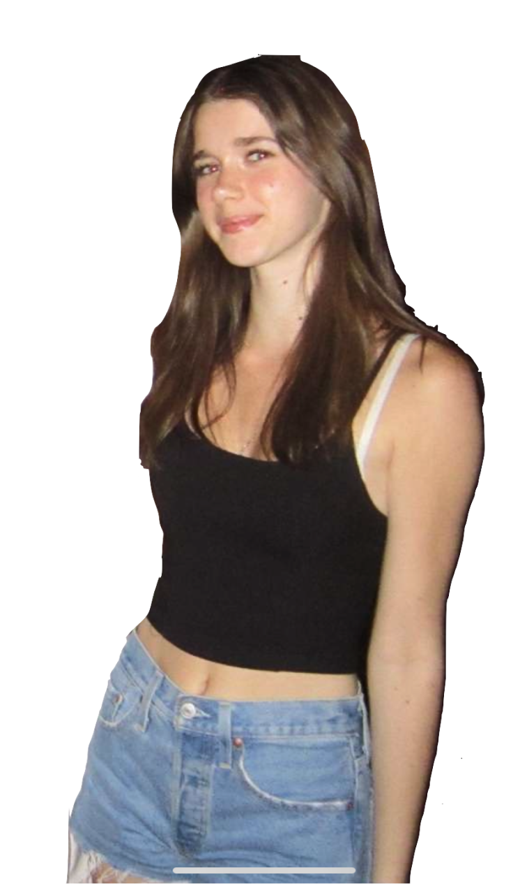
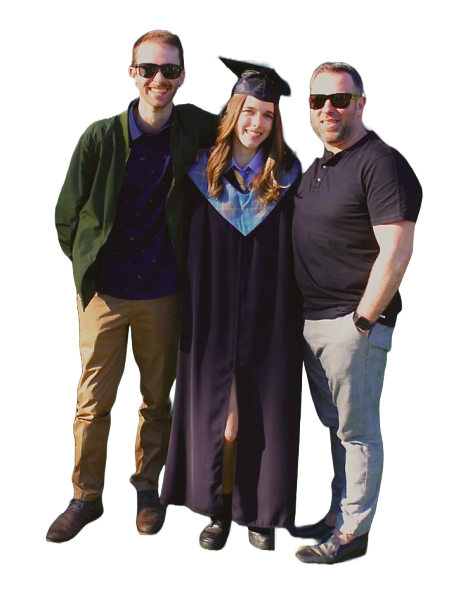
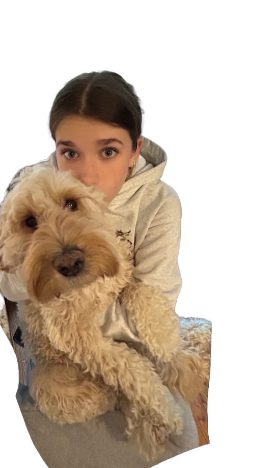
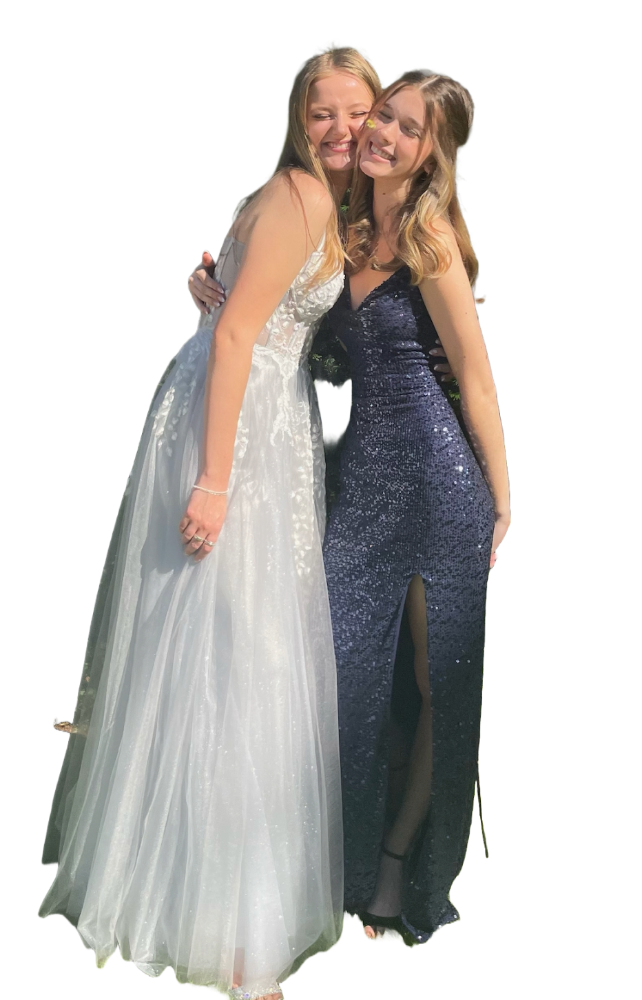
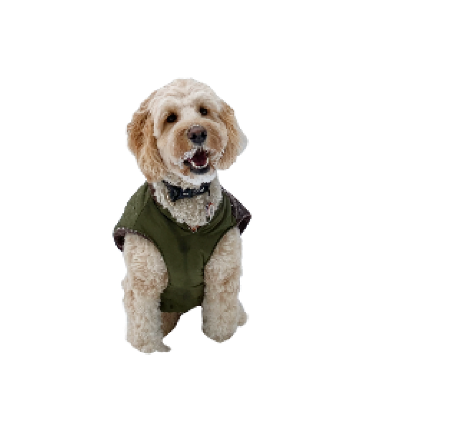
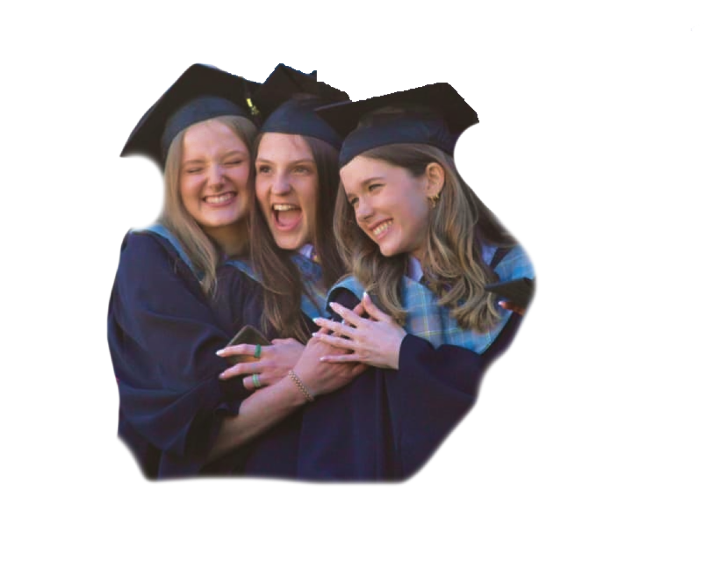
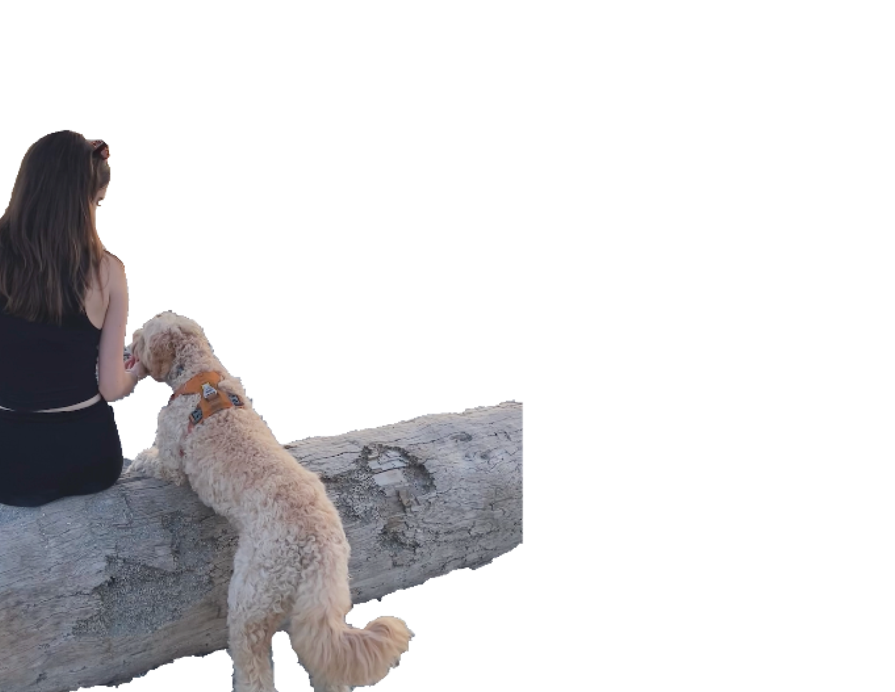
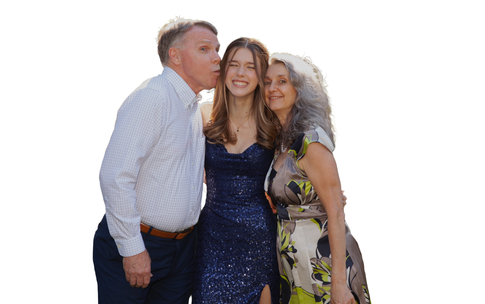

I’m a 2nd year GBDA student at the University of Waterloo. I’m from Vancouver, BC but I have also lived in Victoria, Regina, Shanghai and Toronto. With all the craziness of moving around my friends, family, and of course of my dog Kaiya have become my home no matter where I am. I love to travel and do fun design projects, and one day I hope to be pursuing a career in digital marketing or UX/UI Design.


      
Hello I’m Chantelle!